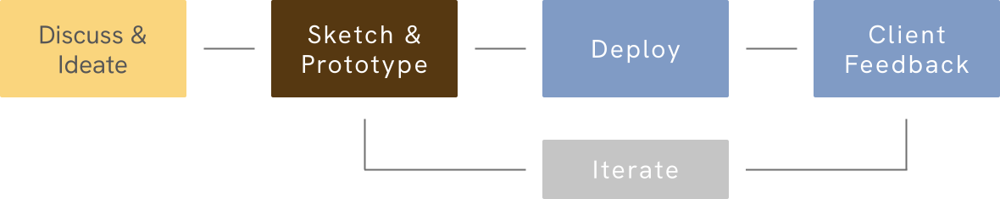

Varuna is a low-cost EMR (Electronic Medical Records) & Scheduling System. The goal of the project
is to give doctors all the power of a departmental EMR in a small, cheap & beautifully designed
package. We want to make healthcare products deflationary (in cost) and democratized.
MY ROLE
Creative Director & Front-end Engineer
TEAM
1 Designer, 1 Engineer

THE BEGINNING
This project started in March 2020. In the middle of the COVID-19 pandemic. My partner & I were
talking to his mother (a doctor) who was complaining about the troubles she was having with the
medical software she was using.
Her hospital's digital systems were clunky and ugly while third part applications were expensive and irresponsible with data collection. Intrigued by this we did some research and found that her complaints were true.
Her hospital's digital systems were clunky and ugly while third part applications were expensive and irresponsible with data collection. Intrigued by this we did some research and found that her complaints were true.

DESIGN PROCESS
We decided to seize the opportunity & quickly build an MVP. We kept the development process
functional & the software light-weight.
The process started with assumptions about users. We started building on those assumptions & rapidly tested them in real-time with real users.
The process started with assumptions about users. We started building on those assumptions & rapidly tested them in real-time with real users.

THE PROBLEMS
After buidling & deploying the MVP we recognized 3 major problems:
1
Getting more doctors interested in our product.
2
There were too many features, all badly constructed.
3
The on-boarding process for doctors was really complicated.
ADAPTATION ONE
We started making rapidly developed, bespoke landing pages for doctors with SEO support to encourage
them to sign up
for our service. This encouraged doctors to get through the somewhat tedious task of signing up, &
our SEO + superior site design increased patient sign-ups as well.
ADAPTATION TWO
We refined the UI. We came up with a useful design metaphor called a "card". Basically, points of
iteraction & related information was broken up into modules called cards. This helped us modularize
the information the user interfaced with, and guide them along simple, well-defined steps of
interaction.
Through our rapid user-testing we found that we needed to pay more attention to hard-data of interface confusion, goal-attainment, etc. rather than user suggestions or opinions.
Through our rapid user-testing we found that we needed to pay more attention to hard-data of interface confusion, goal-attainment, etc. rather than user suggestions or opinions.
ADAPTATION THREE
We decided to build a frontend for more robust open-source EMR projects like OpenEMR. When we looked
into it, we discovered that OpenEMR has a lot of pwerful features, but is inaccessible to most
people. Setting it up takes a lot of technical know-how & the lacklustre user experience is
difficult to inerface with.
We are currently in the middle of developing a front-end with NuxtJS.
We are currently in the middle of developing a front-end with NuxtJS.
OUR LIMITATIONS & AMBITIONS
Our changes to the experience did solve our initial problems but, we found that we couldn't pursue
our ambitions for the project without external funding. We decided to look for funding to bolster
our marketing efforts & hardware production.
LESSONS LEARNT
Through this project, I have gained the following insights:
1.
Collaboration is key.
2.
Pay attention to user data not user opinion.
3.
Refined mental models of complex systems lead to better design.